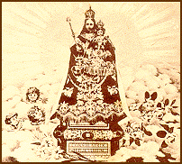

CONTENTS
CONTENTS
Grand Duchy of LuxembourgGeography
Royal Family
Museums & Cultural Organizations
Travel & Country Information
Language & Culture
Genealogy Resources
Luxembourg Genealogy Sites
General Genealogy Sites
Favorite Gadgets
Research Tools
Archives, Libraries & Societies
Dictionaries
French Republican Calendar
Germans to America
Immigration
Luxembourgers in the New World
Luxemburger Gazette
Religion
Luxembourgers in the United States
Family Histories & Surnames
Illinois
Iowa
Kansas
Minnesota
Wisconsin
About GeneLux
Developed by Lisa Oberg
Email me your Feedback
Return to the Front Page
Luxembourgers and Catholicism

Luxembourg was largely untouched by the Protestant Reformation of Europe - which began with Martin Luther in 1520 - and native-born Luxembourgers are predominantly Roman Catholic to this day. Catholicism plays an important part in the culture of Luxembourg and the festivals and traditions celebrated. Emigrant Luxembourgers brought their Catholic faith to America. Establishing churches in their new communities was a priority and served as one way of preserving their cultural identity.
Religious Beliefs and
Practices
- Sign of the Cross in Lëtzebuergesch
Am Numm vum Papp, am Sohn, am Hellege Geescht. Amen.- Religious Life
The Institut Grand-Ducal's Section de Linguistique, de folklore et de toponymie site contains a lot of wonderful information about the role religion played in the lives of emigrant Luxembourgers.- Priests and Bishops
Many Luxembourgers became priests in America. Nicholas Gonner's 1889 book Luxembourgers in the New World also includes a list of American priests of Luxembourg descent. From the Institut Grand-Ducal.- Women Religious
Many women with Luxembourg heritage also became nuns, primarily joining teaching orders. Because women took vocational names when they entered into religious life, researching nuns can be difficult if you do not know the order they belonged to. Women often had their photograph taken when they took their finals vows, for the families they were essentially leaving behind.Possible clues for identifying the order a nun belonged to can come from these photographs and the habits they are wearing or from the abbreviations they may have used after their name, for example Sister Mary Salome Ney, O.P. (Order of Preachers - Dominican Sisters). A very complete list of orders and their corresponding abbreviations can be found in the indispensable Official Catholic Directory published by P.J. Kenedy & Sons, available in many public libraries.
- Religious Life
- Research Tip: In the
U.S. Federal Census for the years of 1880-1920, nuns were indexed
according to the Soundex code S236. Or
in other words, as if their last name was "Sister". Because most, if not
all, nuns had Mary as part of their religious name is it important to look
for both Sister Mary Salome and Sister Salome. By 1920, many nuns were
also soundexed to their surnames.
- Kiirmes
Originally a celebration for the feast day of a parish's patron saint. From the Institut Grand-Ducal.- Bretzelsonndeg
 Pretzel Sunday
Pretzel Sunday
On the third Sunday of Lent, called Pretzel Sunday in Luxembourg, a boy gives a girl he likes an ornately decorated cake shaped like a pretzel. If his feelings are returned, the girl gives him a chocolate egg on Easter. In leap years, the custom is reversed.
Interesting Pretzel Trivia || Interesting Egg Trivia - Bretzelsonndeg
Patron Saints

From a Luxembourg postcard, postmarked 1932.
- Our
Lady of Luxembourg
Image of Our Lady of Luxembourg, Consoler of the Afflicted and patron saint of Luxembourg City, from a 1945 Luxembourg stamp.- Cult of Our Lady
Octave, a pilgrimage to honor Our Lady of Luxembourg, is an important religious ceremony in Luxembourg, held each year from the third to the fifth Sunday after Easter.- Patron Saints of Luxembourg-American Communities
The patron saints of churches established by emigrants in America reflect their Luxembourg heritage.- St. Willibrord
Entry from the Catholic Encyclopedia for St. Willibrord, the patron saint of Luxembourg. A dancing procession is held each year at Echternach in his honor. St. Patrick's Parish in Washington, DC, also has a biography of St. Willibrord. - Cult of Our Lady
Other Catholic Resources
- Latin Links
Latin dictionaries and language guides.- Saints & Angels || Saints Index || Patron Saint Index
Everything you could ever want to know about patron saints.- The Catholic Encyclopedia
This volunteer project is transcribing the invaluable 32 volume encyclopedia set published in 1917. There are entries for many saints, church doctrine and histories of many religious orders, the Dominicans, for example.- Catholic Information Center on Internet
- Catholic Online
- Saints & Angels || Saints Index || Patron Saint Index